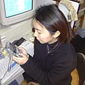

| ポケモンと言ったら対戦！と思ってしまう編集長は、せっせせっせとポケモンを育て、バトルタワーへ行ってみました。全国の強豪トレーナーが待ちかまえているのですね。楽しみ、楽しみ。  さて、やってきたのはアサギシティの西にあるバトルタワー。やっと中に入れる～�｡。『金・銀』バージョンではなかった大きなタワーができています。受けつけのお姉さんに話しかけ、早速バトル！といきごみましたが、ポケモンは３体しか連れてこれないといわれて、あわててパソコンにポケモンをあずけました。ふう、ちょっとあせりすぎちゃったかな？ マサキのパソコンへポケモンを預けて、精鋭３体を連れて受付カウンターに戻ります。 まず、お姉さんの案内に従い、レベルいくつのポケモンで対戦するかを決めます。ここはひかえめに「レベル20」でエントリーすることにしました。次に、バトルをやる部屋を選びます。なるほど、たくさん部屋があるから大きなタワーになっているのですね。 エレベーターで部屋に案内されたあと、いよいよトレーナーと対戦。相手は「ぼうそうぞくのえのもと」。すっごいコワそう！うーん、勝てるかなあ。編集長はお気に入りのニドリーナを先頭に立てて対戦。善戦しましたが、ほかのポケモンのレベルがバラバラだったため、あえなく初戦敗退してしまいました。悔しい！でも、すっごくおもしろかった！ここでは７人勝ちぬいて、その日のうちで成績が一番良いと部屋に名前が登録されるそうです。バトルが終わるとすぐに引き返して、バトル用にポケモンを育て始めましたよ。今度はきっと勝ってみせます！でも、対戦はレベルごとに分かれているし、レベル10から戦えますから、初心者も気軽にバトルできるんですよ。工夫すればきっと勝てると思います。（バトルタワーでの対戦は１日５回までです） |
| ポケモンを育ててもらおうと、育て屋のおじいさんに話しかけると、なぜかポケモンの「タマゴけん」というものをもらえました。コガネシティに着いたとき、ＰＣＣ（ポケモンコミュニケーションセンター）に行くと、お姉さんが「タマゴけんをおもちですね」と言います。この「タマゴけん」で、ポケモンのたまごをもらえるらしいです。ラッキー！早速「タマゴけん」とタマゴをひきかえてもらいました。しばらく持って歩いていると、ポケモンのたまごがかえって中からピィが誕生！このピィはピヨピヨパンチを覚えていることが発覚。うれしい！ |
| 全国の仲間とつながっているのが、モバイルのいいところ。大事に育てたズバットをポケモン交換に出してみました。これは、コガネシティのＰＣＣ（ポケモンコミュニケーションセンター）でできるサービスです。交換したいポケモンは「ソーナンス」にしました。交換の条件にあう人は、センターで探してくれるんです。２時間経つと、交渉成立の確認ができます。７日間は預ってくれるので、いまはまだ交換待ち。だれか交換してくれる人はいるのかな？ ワクワクしますね。 |